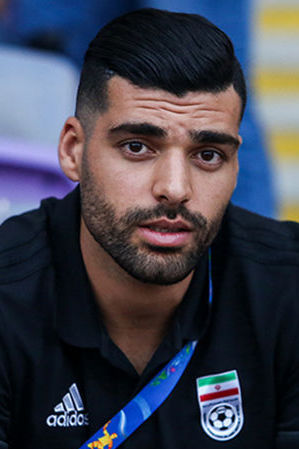

| Alireza Beiranvand |
Portero |
32 |
Alireza Beiranvand (Khorramabad, 21 de septiembre de 1992) es portero del Persepolis y de la selección de Irán. |
 |
| Morteza Pouraliganji |
Defensa central |
32 |
Morteza Pouraliganji (Babol, 19 de abril de 1992) es defensor iraní que juega en Persepolis. |
 |
| Ehsan Hajsafi |
Lateral |
34 |
Ehsan Hajsafi (Kashan, 25 de febrero de 1990) es un lateral iraní que juega en el AEK Atenas. |
 |
| Sardar Azmoun |
Delantero |
29 |
Sardar Azmoun (Gonbad-e Kavus, 1 de enero de 1995) es delantero iraní que juega en la Roma. |
 |
| Mehdi Taremi |
Delantero |
33 |
Mehdi Taremi (Bushehr, 18 de julio de 1992) es delantero iraní que juega en el Porto. |
 |